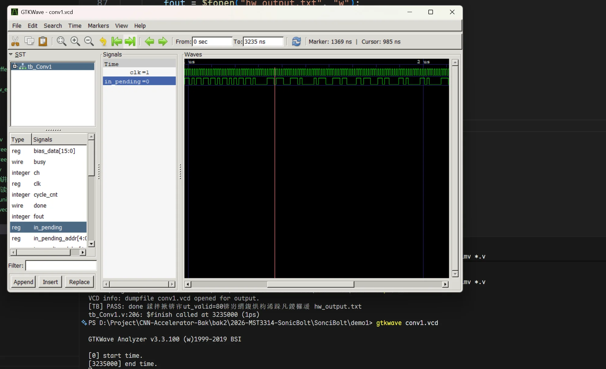
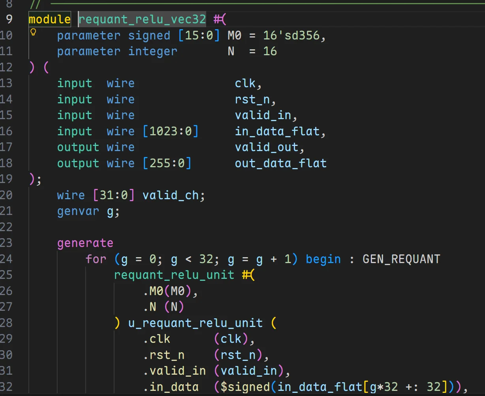
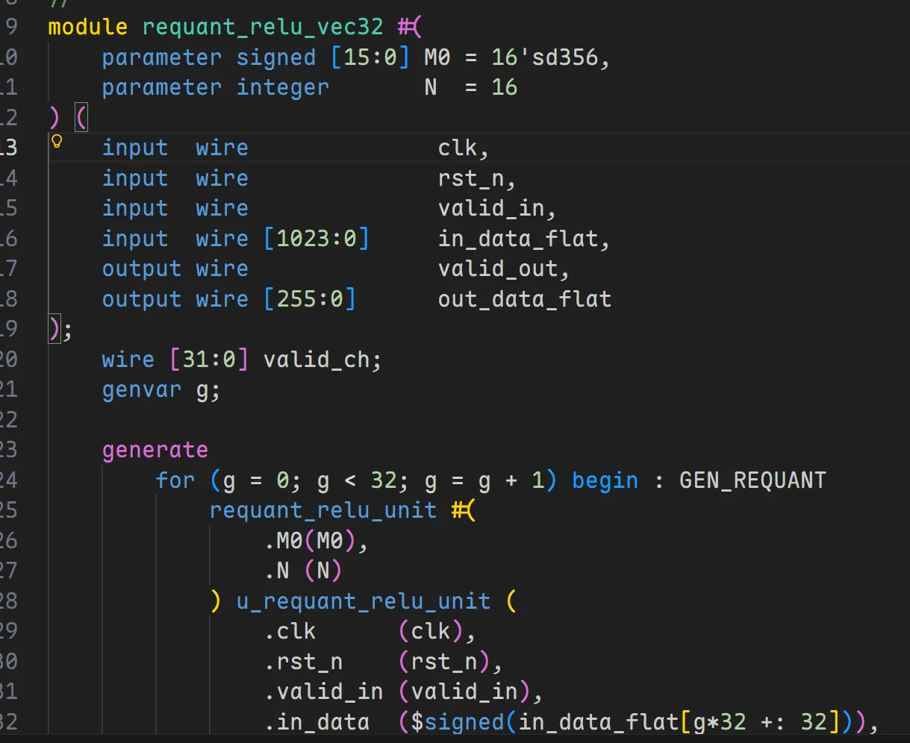
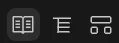

VS Code + Verilog 代码编辑工具链配置¶
以下操作针对：Windos 操作系统
更新日志¶
- 2026-03-22: 删除插件
SystemVerilog，因其跨文件跳转功能和语法高亮功能完全失效，改用插件Verilog Highlight来提供语法高亮功能。此外，删除了settings.json中与插件SystemVerilog,TerosHDL相关的键值对，因为原本键值对呈现暗色，根本无效。
I. Icarus Verilog 工具¶
1.1 安装 Icarus Verilog¶
推荐使用 官方 Windows 预编译版本。
下载界面：https://bleyer.org/icarus/
下载 Windows 版本，名字例如：
下载后双击运行即可，注意可以自定义安装目录
例如：
GTKWave
GTKWave 是一个波形查看工具，Icarus Verilog 的 Windows 预编译版本中已经包含了 GTKWave 的安装包，安装 Icarus Verilog 时会提示是否安装 GTKWave，建议安装。
安装完成后目录结构类似：
D:\EDA\iverilog\iverilog
├─bin
│ ├─iverilog.exe
│ ├─vvp.exe
│ └─...
├─gtkwave # 如果勾选了安装 GTKWave，则会有这个目录
│ ├─bin
├─include
└─lib
1.2 配置环境变量¶
安装完成后，将 bin\ 目录添加到系统环境变量 Path 中。
之后依次在 Powershell 中输入：
如果勾选了安装 GTKWave，则也需要将
gtkwave\bin\目录添加到系统环境变量Path中。
如果均成功显示版本信息，则说明配置成功。
1.3 运行！¶
假设当前目录有一个编译不报错的 Verilog 文件项目
1.3.1 编译¶
VS Code 中 Ctrl + ` 打开 PowerShell（或者你在 setting.json 中配置的启动终端，Windows 默认是 PowerShell）：
其中 -g2005-sv 是告诉编译器使用 SystemVerilog 2005 标准，-o simv 是指定输出的可执行文件名为 simv，*.v 是编译当前目录下的所有 .v 文件。
1.3.2 仿真¶
1.3.3 查看波形¶
如果想要查看波形，首先你得有波形文件才行！
在 testbench 脚本中用 \$dumpfile 和 \$dumpvars 语句生成波形文件
然后：
之后 powershell 调用 GTKWave 工具就会弹出一个图形界面，选择你生成的波形文件，就可以查看波形了。

II. SystemVerilog 插件：跨文件跳转¶
我们在写 Python, Rust, C++ 等高级语言时，IDE 都会提供跨文件跳转功能，例如在 Python 中按住 Ctrl 键点击一个函数调用，就可以跳转到该函数的定义处，这极大地提升了开发效率。这些文件跳转功能并非编程语言本省的特性，也并非 VS Code 本身功能，而是由第三方插件提供的功能支持；如果使用的是 Pycharm, CLion, Rust Analyzer 等 专业级IDE，跨文件跳转功能也是由这些 IDE 自带的，不需要额外安装。
但是在数字电路领域， Verilog 语言并没有一个像样的文本编辑工具能够完成诸如跨文件跳转、语法检查等功能，虽然 Vivado 和 Quartus 等综合工具提供了一个文本编辑器，但它们的编辑器功能非常有限，无法满足日常开发需求。
如果想要扩展编辑 Verilog 的体验，最好借助于 VS Code 的插件生态（虽然目前支持 Verilog 的插件并不多）。
VS Code 搜索插件：
注意插件开发者是：Eirik Prestegårdshus
该插件的功能：
- 语法高亮✅️
- 语法检查❓️
- 跨文件跳转✅️
注意，跨文件跳转功能需要额外下载一个叫做 ctags 的工具，安装方法：
- 搜索 https://github.com/universal-ctags/ctags-win32
- Release 页面下载 Windows 版本的预编
.zip包 - 解压到任意目录，例如
D:\EDA\ctags - 将
ctags.exe所在文件夹的路径添加到系统环境变量Path中，或者记住该绝对路径，后续在 VS Code 插件设置中需要用到。
之后，在 VS Code 按 Crtl + Shift + P，输入 setting.json用户设置，添加如下键值对：
之后重启 VS Code，就可以点击子模块实现跨文件跳转了。
SystemVerilog 插件还附加了非常漂亮的语法高亮，能够让代码更清晰易读。例如：

语法检查功能缺失
此外，还有一个非常头疼的点就是，SystemVerilog 插件似乎无法做语法检查，例如 always @ 语句少了一个@，该插件无法检测出来，虽然我们的编译工具和综合工具能够在综合时发现问题，但无法在编辑时提供实时反馈，影响开发效率。
如果想要语法检查功能，可以安装一个叫做 Verilog-HDL/SystemVerilog/Bluespec SystemVerilog 的插件，见下一节。
但请注意：如果启用 Verilog-HDL/SystemVerilog/Bluespec SystemVerilog 插件，会导致 SystemVerilog 插件的语法高亮效果损失一部分，但是跨文件跳转功能正常。
也不是完全不行？
见第三步的黑魔法，能够同时启用语法高亮、跨文件跳转功能和语法检查功能。
III. Verilog-HDL/SystemVerilog/Bluespec SystemVerilog 插件：语法检查¶
3.1 语法检查¶
如果你还没有安装 Icarus Verilog，请立即回到第一步先安装 Icarus Verilog，因为该插件的语法检查功能依赖于 Icarus Verilog 的编译器来实现。
VS Code 插件市场搜索 Verilog-HDL/SystemVerilog/Bluespec SystemVerilog，安装由 Mshr-H 开发的插件。
然后按 Crtl + Shift + P，输入 setting.json用户设置，添加如下键值对：
// --- mshr-h 插件配置：只做查错 ---
"verilog.linting.linter": "iverilog",
"verilog.linting.iverilog.runAtFileLocation": true, // 【关键1】让 iverilog 在当前文件所在目录运行
"verilog.linting.iverilog.arguments": "-y .", // 【关键2】告诉 iverilog 去当前目录('.')寻找未知的子模块！解决误报！
"verilog.ctags.path": "<改成你的ctags.exe的绝对路径>", // 防止控制台吭哧吭哧刷报错
"verilog.hover.enable": true, // 开启悬停提示
之后，就可以同时完成语法检查了，但是 SystemVerilog 插件的语法高亮效果会损失一部分（如下图，可以与之前的高亮效果对比以下），但跨文件跳转功能正常。

3.2 黑魔法¶
如果你硬要想同时启用 SystemVerilog 插件的语法高亮、跨文件跳转功能和 Verilog-HDL/SystemVerilog/Bluespec SystemVerilog 插件的语法检查功能，有一个黑魔法：
我们强制让插件把 .v 文件识别为 SystemVerilog 文件！
只需要在 setting.json 用户设置中添加如下键值对：
IV. TerosHDL¶
4.1 TerosHDL 插件介绍¶
相比前面两个工具，TerosHDL 是一款致力于将 VS Code 打造为全功能 FPGA IDE 的开源插件。在我们的这套方案中，我们主要利用它极其出色的代码分析能力和图形化渲染能力。
它的核心优势是足够轻量化，无需安装庞大的商业 EDA 软件（如 Vivado/Quartus），即可通过轻量级工具链实现 RTL 电路图预览。杀手锏功能：
Schematic Viewer：自动解析代码连线，生成可交互的 RTL 原理图。State Machine Viewer：自动提取 always 块中的 case 逻辑，绘制状态转移图（FSM）。自动例化与文档生成：提供快速的代码重构支持。
安装前请注意
这些功能仅仅属于锦上添花级别，如果SystemVerilog插件和Verilog-HDL/SystemVerilog/Bluespec SystemVerilog插件已经解决了你的问题，那么你完全可以不安装 TerosHDL 插件，因为该插件相比前两个插件本身比较笨重，安装后会占用较多的系统资源，可能会导致 VS Code 运行变慢。或者可以将其安装在 VS Code Insider 中，专门用于查看 RTL 原理图和状态转移图。
4.2 环境配置¶
TerosHDL 的原理图功能依赖于 Yosys（开源逻辑综合工具）。在 Windows 下，最稳妥、最现代的安装方式是使用 Yowasp（Python 移植版），它不需要复杂的环境变量配置。
安装方法：
如果你不想污染你的全局python环境，当然可以使用 venv, uv, conda等方法虚拟环境，这里不再介绍。
安装完毕后，必须确保命令行能够找到 yowasp-yosys，可以在 PowerShell 中输入：
如果能够返回版本信息，则说明安装成功。
4.3 TerosHDL 配置步骤¶
在 VS Code 插件市场中搜索 TerosHDL，安装。
-
第一步：进入配置界面
点击 VS Code 左侧活动栏的TerosHDL图标，在弹出面板中点击Open Global SettingS Menu。 -
第二步：配置原理图引擎 (Schematic Viewer)
在配置页面的左侧导航栏找到 Schematic Viewer，进行以下设置：
Select the backend: 选择 YOWASP(Only Verilog/SV)。
然后点击Apply。 -
第三步：规避插件冲突 (Linter)
由于我们已经有 mshr-h 插件负责语法检查，需要关闭 TerosHDL 的相关功能以节省性能并防止重复报错：
回到配置页面，左侧导航栏找到 Linter settings，点击，进去将所有项设置为Disabled即可。
然后点击Apply。
然后打开setting.json用户设置，添加如下键值对：
4.4 使用示例¶
VS Code中随便打开一个 .v 或者 .sv 文件，在编辑器右上角会出现这三个图标：

从左到右分别是：
自动例化与文档生成：自动化生成该 RTL 的端口分析文档。Schematic Viewer：自动解析代码连线，生成可交互的 RTL 原理图。State Machine Viewer：自动提取 always 块中的 case 逻辑，绘制状态转移图（FSM）。
尤其是后面两个效果很不错，写完 RTL 后可以快速帮你排查当前模块的功能实现是不是符合你的预期！
V. 一些调试反馈¶
5.1 跨文件跳转的 bug¶
SystemVerilog 插件的跨文件跳转功能偶尔会失效
只有当待跳转的模块打开后，才能跨文件跳转，并且不保证100%成功，目前不清楚原因，也没有找到一个稳定的解决方案。